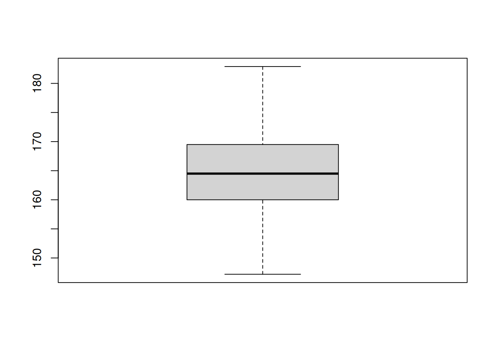
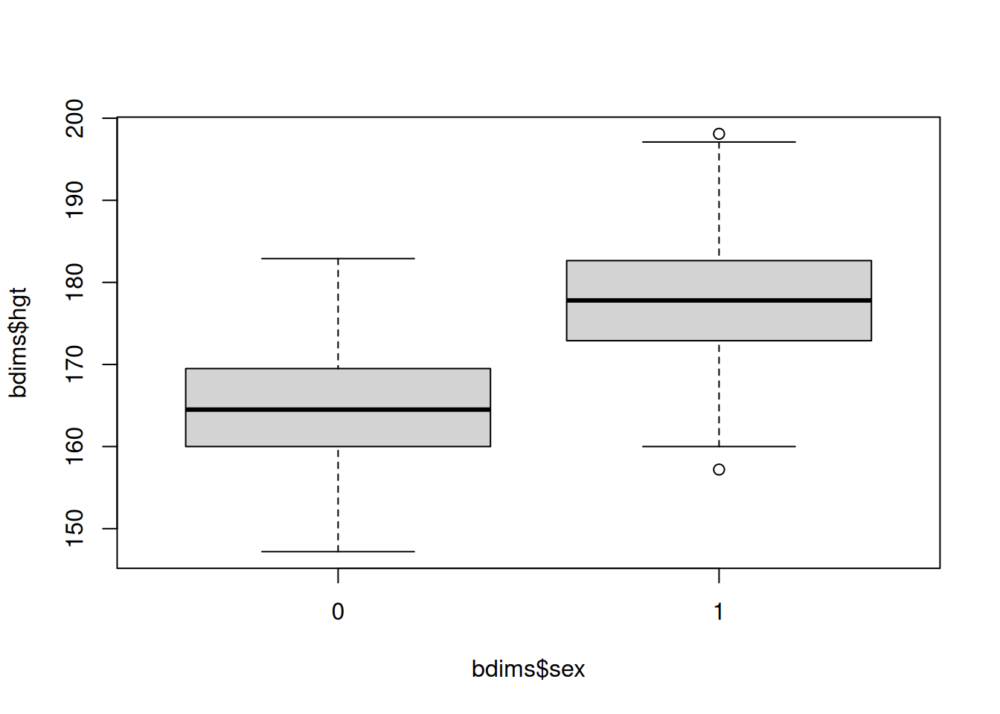
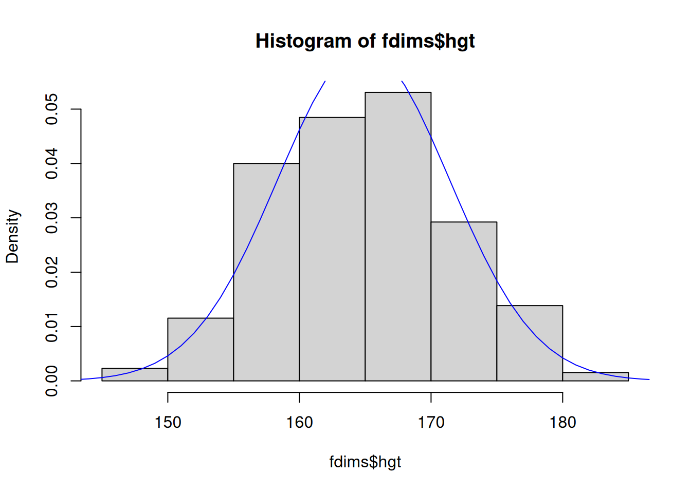
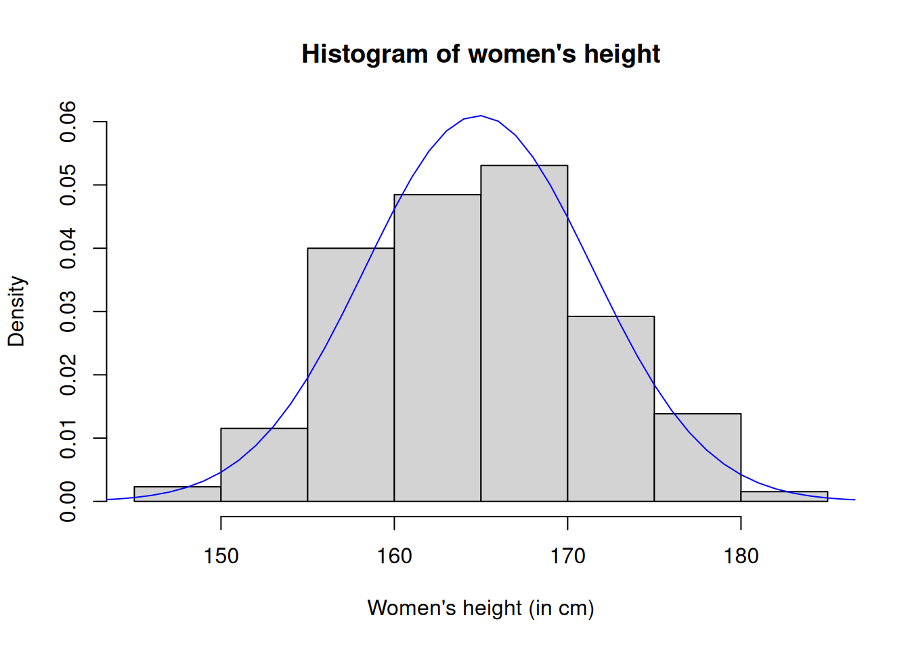
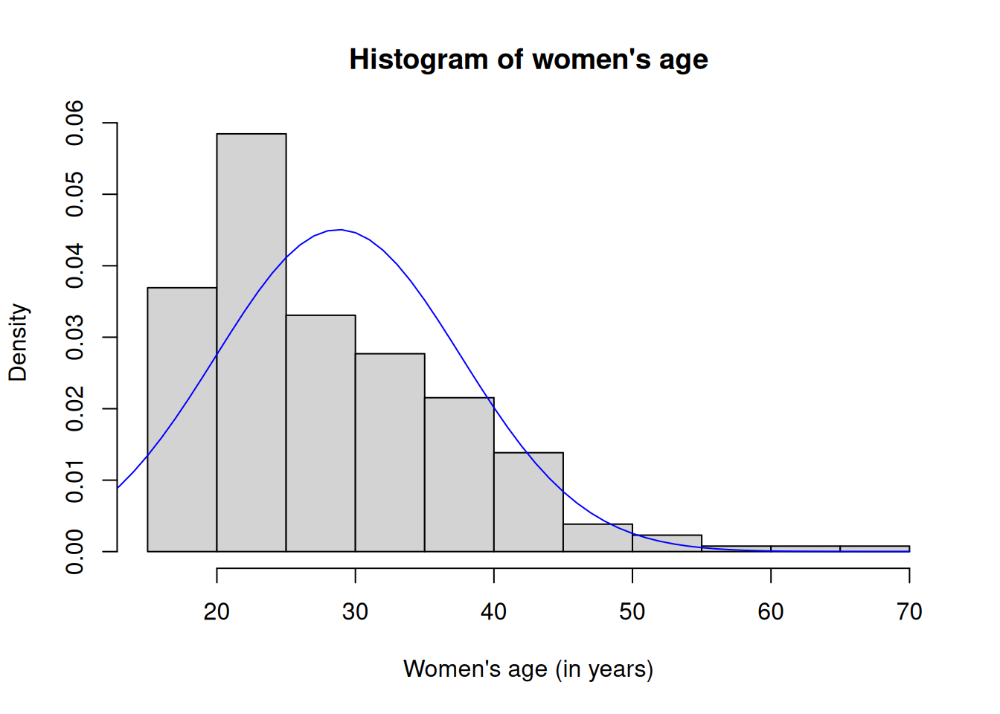
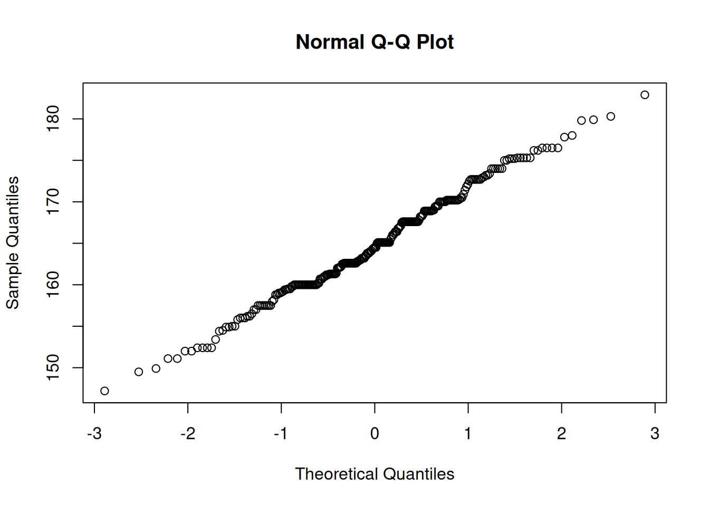

Lab 3: Data and distributions
This tutorial is adapted from OpenIntro and is released under a Creative Commons Attribution-ShareAlike 3.0 Unported license. This lab was written for OpenIntro by Andrew Bray and Mine etinkaya-Rundel, extended for the University of York by Gustav Delius, and subsequently extended by Stephen Connor.
In the first part of this worksheet you will look in more detail at various numerical and graphical summaries of data. This reinforces, and slightly expands on, what you have already met in Lab 2 and is closely related to the material from chapter 16 in the textbook.
In the second part you will get a first glimpse at how statistics makes a connection between probability theory and data: you will model the height variable in a dataset as a normally distributed random variable.
As always, you should start the lab by creating a script file (with a sensible name), and then adding each line of code to this file as you go, so that you can easily re-run it later if necessary. Add your own comments to remind you what each chunk of code does!
Numerical summaries of data
Datasets
Data, according to The American Heritage Dictionary, is “Information, especially information organised for analysis or used as the basis for a decision”. Data comes in all sizes and shapes. Often it is disorganised and difficult to work with. The first step in data analysis is then to clean and organise the data. We will assume that the data has already been organised into what we call a dataset. A dataset consists of a number \(n\) of observations of the values of one or more variables.
Here is an example of a small multivariate dataset, collected from a previous year of IPS students:
| Height(cm) | Age(years) | Eye colour | # of textbooks | Likes Stats |
|---|---|---|---|---|
| 175 | 19 | Green | 1 | Very much |
| 160 | 23 | Brown | 2 | Not at all |
| 180 | 21 | Blue | 1 | A bit |
| 159 | 18 | Brown | 7 | A bit |
This dataset contains \(n=4\) observations of five different variables. The variables are the height, the age and the eye colour of students in the class, the number of probability textbooks they had looked at for this course, and the answer to the question: “How much do you like Statistics?”.
Below you will see how this data is stored in R as a data frame. A data frame is just like the above table, but with a bit of extra information about the types of the different variables.
Types of variables
Recall from Lab 2 that a variable is either quantitative or qualitative. It is important to distinguish between different types of variables since methods for viewing and summarising data are dependent on variable type.
The quantitative variables in our example dataset are “Height”, “Age” and “Number of textbooks”. Of these “Height” and “Age” are continuous variables; even if the height might be given rounded to the nearest centimetre it would still be thought of as a continuous variable because non-integer values would make sense. The “Number of textbooks” variable is discrete.
Let us tell R about the values of these quantitative variables:
The R function c() binds together its arguments into a vector. You already know how to work with such vectors. For example, to get the height of the 3rd student you evaluate
height[3]
#> [1] 180The qualitative variables in our example dataset are “Eye colour” and “Likes Stats”. Of these, “Eye colour” is nominal and “Likes Stats” is ordinal. R refers to categorical variables as factors. We can tell R that a variable is qualitative with the factor() function as follows:
If you look for the eye_col variable in the Environment tab of your RStudio window you will see that it is listed as: Factor w/ 3 levels "Blue","Brown",...: 3 2 1 2.
For the “Likes Stats” variable we also need to tell R how to order the categories.
This allows R to know whether the second student likes statistics more than the fourth for example:
likes_stats[2] > likes_stats[4]
#> [1] FALSEWe can now bind all these variables together into a data frame:
students <- data.frame(height, age, eye_col, num_books, likes_stats)Given a dataset, we want to make sense of it. We begin by summarizing the distribution of the variables in the dataset. The first questions one would ask are: are the values centred around a particular value, and then how much variation around that central value is there?
Central value of a variable
The most important way to define a “central” value for a collection of values for a quantitative variable is the mean, which is an average of the values. If we have \(n\) observations of a variable \(X\), denoted by \(x_1,x_2, \dots, x_n\), then the mean is
\[ \bar{x}_n=(x_1+\dots+x_n)/n.\]
Take the variable “Age” from our example dataset. There we have
\[ \bar{x}_4=(19+23+21+18)/4=81/4=20.25.\]
x <- students$age
mean(x)
#> [1] 20.25One drawback of using the mean to define the centre of a dataset is that the mean can get very much affected by extreme values. For example, if we added a fifth datapoint to the above dataset, a mature student aged 58, then the mean would change to
\[\bar{x}_5=(19+23+21+18+58)/5=139/5=27.8.\]
This value is outside the cluster of values around \(20\). An alternative to the mean that is less affected by such outliers is the median. To define this we first list the values in ascending order. We enclose the indices in this ordered set in parentheses to distinguish them from the indices of the values in the unordered dataset. So we have the values
\[ x_{(1)}\leq x_{(2)}\leq\cdots\leq x_{(n)}.\]
The kth value \(x_{(k)}\) is often referred to as the kth order statistic. In our example
\[x_{(1)}=18, x_{(2)}=19, x_{(3)}=21, x_{(4)}=23, x_{(5)}=58.\]
sort(xl)
#> [1] 18 19 21 23 58The median is defined as
\[ \text{Med}_n=\begin{cases}x_{((n+1)/2)}&\text{ if $n$ is odd}\\\frac{1}{2}\left(x_{(n/2)}+x_{(n/2+1)}\right)&\text{ if $n$ is even}\end{cases} \]
So for our small dataset of four age values we have
\[ \text{Med}_4=\frac{1}{2}\left(x_{(2)}+x_{(3)}\right)=\frac{1}{2}\left(19+21\right)=20. \]
median(x)
#> [1] 20For the larger dataset of five values including the outlier, we have
\[\text{Med}=x_{(3)}=21 \]
still quite close to the centre of the cluster of values.
median(xl)
#> [1] 21Amount of variability in a variable
The most important measure of the variability in the data around the central value is the sample variance
\[ s_n^2=\frac{1}{n-1}\sum_{i=1}^n(x_i-\bar{x}_n)^2. \]
For our sample data we get
\[ \begin{split} s_4^2 &= \frac{1}{3}\sum_{i=1}^4(x_i-\bar{x}_4)^2 \\ &=\frac{1}{3}\left((19-20.25)^2+(23-20.25)^2+(21-20.25)^2+(18-20.25)^2\right)\\ &=\frac{1}{3}\left(\left(\frac{5}{4}\right)^2+\left(\frac{11}{4}\right)^2+\left(\frac{3}{4}\right)^2+\left(\frac{9}{4}\right)^2\right)\\ &=\frac{236}{48}\approx 4.917. \end{split} \]
var(x)
#> [1] 4.916667The age was measured in years. The variance is therefore measured in square years. It is often useful to have a measure of the variability that has the same units as the variable itself. Therefore one defines the sample standard deviation \(s_n\) to be the square root of the sample variance, \(s_n=\sqrt{s_n^2}\).
sd(x)
#> [1] 2.217356Like the mean, the variance is affected very much by outliers. In our example with the extra datapoint \(x_5=58\) we find
A measure that is less affected by outliers is the median of absolute deviations,
\[ \text{MAD}_n=\text{Med}\left(|x_1-\text{Med}_n|,\dots,|x_n-\text{Med}_n|\right).\]
In our example datasets
\[\text{MAD}_4=\text{Med}\left(|19-20|,|23-20|,|21-20|,|18-20|\right)=\text{Med}(1,3,1,2)=1.5,\]
and
\[ \text{MAD}_5=\text{Med}\left(|19-21|,|23-21|,|21-21|,|18-21|,|50-21|\right)=\text{Med}(2,2,0,3,29)=2. \]
We see that the outlier does not affect the median of absolute deviation nearly as much as it affects the standard deviation.
Empirical quantiles, quartiles, and IQR
We now introduce the quantiles which give us more detailed information about the distribution of values. The \(p\)-th quantile is a value so that a proportion \(p\) of the values in the dataset is below or equal to this value.
Because there are gaps between the values in the dataset, there is not a unique such value. R provides nine different types of quantiles. We present here the one that R uses as its default.
For \(p\in[0,1]\) we define the \(p\)-th quantile as
\[ q_n(p)=x_{(k)}+\alpha\left(x_{(k+1)}-x_{(k)}\right) \]
where
\[ k=\lfloor h\rfloor,~~~\alpha=h-\lfloor h\rfloor,~~~\text{ with }h=(n-1)p+1.\]
Recall that \(\lfloor{x}\rfloor\) (the floor of \(x\)) denotes the largest integer smaller or equal to \(x\).
The \(p\)-th quantile is also referred to as the \(100p\)-th percentile. Three percentiles are given special names:
- lower quartile = 25th percentile \(=q_n(0.25)\)
- median = 50th percentile \(=q_n(0.5)\)
- upper quartile = 75th percentile \(=q_n(0.75)\).
We calculate the upper and lower quartiles in our example dataset containing the age of \(n=4\) students. For the lower quartile we have \(p=1/4\) and we calculate
\[ h=(n-1)p+1=\frac{3}{4}+1, ~~~k=\lfloor h\rfloor = 1,~~~\alpha=h-\lfloor h\rfloor = \frac34.\] Then
\[ q_4(0.25)=x_{(1)}+\alpha\left(x_{(2)}-x_{(1)}\right)=18+0.75(19-18)=18.75.\]
For the upper quartile, \(p=3/4\), we find similarly
\[ h=(n-1)p+1=3\frac{3}{4}+1, ~~~k=\lfloor h\rfloor] = 3,~~~\alpha=h-\lfloor h\rfloor = \frac14, \] and \[ q_4(0.75)=x_{(3)}+\alpha\left(x_{(4)}-x_{(3)}\right)=21+0.25(23-21)=21.5.\]
To let R do the calculation for us we use
quantile(x)
#> 0% 25% 50% 75% 100%
#> 18.00 18.75 20.00 21.50 23.00The 0% quantile is the minimum value and the 100% quantile the maximum value. These are also known as the range of the data.
range(x)
#> [1] 18 23By default the quantile() command gives us the quartiles. To get a particular quantile use
quantile(x, 0.35)
#> 35%
#> 19.1Our textbook1 uses a different convention for the quantiles that has \(h=(n+1)p\), which is type 6 in R.
quantile(x, type=6)
#> 0% 25% 50% 75% 100%
#> 18.00 18.25 20.00 22.50 23.00Use the command ?quantile in R to get more information. When there are many values in the dataset then the difference between the alternative conventions will be negligible.
The interquartile range, abbreviated as IQR, is the difference between the upper and the lower quartile:
\[ IQR=q_n(0.75)-q_n(0.25).\]
In our example we find \(IQR=2.75\).
IQR(x)
#> [1] 2.75The data
This week we’ll be working with measurements of body dimensions. This dataset contains measurements from 247 men and 260 women, most of whom were considered healthy young adults. The data is saved in an RData file. We download it from the internet and then load it into R.
download.file("http://www.openintro.org/stat/data/bdims.RData",
destfile = "bdims.RData")
load("bdims.RData")Let’s take a quick peek at the first few rows of the data.
head(bdims)You’ll see that for every observation we have 25 measurements, many of which are either diameters or girths. A key to the variable names can be found here, but we’ll be focusing on just three columns to get started: weight in kg (wgt), height in cm (hgt), and sex (1 indicates male, 0 indicates female).
Since males and females tend to have different body dimensions, it will be useful to create two additional datasets: one with only men and another with only women.
Let us take a quick look at some summary statistics of the women’s height.
summary(fdims$hgt)
#> Min. 1st Qu. Median Mean 3rd Qu. Max.
#> 147.2 160.0 164.5 164.9 169.5 182.9Note that this summary gives rounded results only. If you want more exact results you should use the functions we introduced above, for example
mean(fdims$hgt)
#> [1] 164.8723A so-called stem-and-leaf plot is one way of getting a quick view of the data.
stem(fdims$hgt)
#>
#> The decimal point is at the |
#>
#> 146 | 2
#> 148 | 59
#> 150 | 11
#> 152 | 0044444
#> 154 | 4599008
#> 156 | 0002250055555555
#> 158 | 028800124455588
#> 160 | 000000000000000000002277790022233333334
#> 162 | 00112556666666666666688900222255888
#> 164 | 0013455501111111111111157
#> 166 | 00244488015666666666666666668
#> 168 | 223599999999004555
#> 170 | 0000002222222222355948
#> 172 | 15777777790224
#> 174 | 0000000022233333
#> 176 | 2255558
#> 178 | 089
#> 180 | 3
#> 182 | 9Here the integer part of each data point is use as the stem and listed vertically. The last digit (the leaf) is printed behind the vertical bar, one for each observation with the same stem.
The box-and-whisker plot, or boxplot for short, is an aptly named graphical representation of the summary statistics we have just introduced. It consists of a box that extends in the vertical direction from the lower to the upper quartile, with a horizontal line through the box at the median.
Whiskers may extend from the box:
- the upper whisker extends to the highest value in the dataset no more than 1.5 IQR above the upper quartile. If there is no value in the dataset in this range then there will be no upper whisker.
- similarly the lower whisker extends to the lowest value in the dataset no more than 1.5 IQR below the lower quartile.
Finally, any value in the dataset that falls outside the box and whiskers is drawn as a dot: these values are referred to as outliers.
boxplot(fdims$hgt)
The purpose of a boxplot is to provide a thumbnail sketch of a variable for the purpose of comparing across several categories. So we can, for example, compare the heights of men and women with
boxplot(bdims$hgt ~ bdims$sex)
The notation here is new. The ~ character can be read “versus” or “as a function of”. So we’re asking R to give us box plots of heights where the groups are defined by sex.
Data and probability distributions
It is natural to try to make a connection between variables in a dataset and random variables, and between observations of the variable in a dataset and a random sample from the random variable. So we will think of the observations in the dataset as being produced by a probability experiment. Or, said differently, we model the real-world variable as a random variable. The task of Statistics is to determine what the distribution of that random variable should be to best match the distribution of observed values in the dataset.
The normal distribution
In this lab we’ll investigate the probability distribution that is most central to statistics: the normal distribution. If we are confident that a variable in our dataset is well described by a normally distributed random variable, that opens the door to many powerful statistical methods. Here we’ll use the graphical tools of R to assess the normality of our data.
We’ll be working with women’s heights. We will try to model this as a normal random variable. To see how accurate that description is, we can plot a normal distribution curve on top of a histogram of the observed values to see how closely the data follow a normal distribution. This normal curve should have the same mean and standard deviation as the data. Let’s calculate these statistics so that we can easily use them later.
Next we make a density histogram to use as the backdrop and use the lines function to overlay a normal probability curve. The difference between a frequency histogram and a density histogram is that while in a frequency histogram the heights of the bars add up to the total number of observations, in a density histogram the areas of the bars add up to 1. Frequency and density histograms both display the same exact shape; they only differ in their y-axis. Using a density histogram allows us to properly overlay a density function curve over the histogram since it too is normalised to have an area of 1 under the curve. To produce a density histogram we use the hist() command, and include the parameter probability = TRUE:
hist(fdims$hgt, probability = TRUE)
x <- 140:190
y <- dnorm(x, mean = fhgtmean, sd = fhgtsd)
lines(x, y, col = "blue")
In the second and third lines of the above code we created the x- and y-coordinates for the normal curve. We chose the x range as 140 to 190 in order to span the entire range of fheight. To create y, we used dnorm to calculate the density of each of those x-values in a distribution that is normal with mean fhgtmean and standard deviation fhgtsd. The final command draws a curve on the existing plot (the density histogram) by connecting each of the points specified by x and y. The argument col simply sets the colour for the line to be drawn.If we left it out, the line would be drawn in black.
The top of the curve is cut off because the limits of the x- and y-axes are set to best fit the histogram. To adjust the y-axis you can add the ylim argument to the histogram function. We also put a better label on the x-axis and a better title.
hist(fdims$hgt, probability = TRUE, ylim = c(0, 0.06),
xlab="Women's height (in cm)",
main="Histogram of women's height")
lines(x, y, col = "blue")
Based on the this plot, it appears that the data are pretty well approximated by a normal distribution.
Skewness
Next let us make a similar plot for the female age variable.
hist(fdims$age, probability = TRUE,
xlab="Women's age (in years)",
main="Histogram of women's age")
x <- 10:70
y <- dnorm(x, mean = mean(fdims$age), sd = sd(fdims$age))
lines(x, y, col = "blue")
The age is clearly not normally distributed. The distribution of age is skewed towards the left, towards younger age.
Such an asymmetry in a distribution is measured by the coefficient of skewness. A distribution like the one above that has a heavier or longer tail on the right has a positive skewness. This is the first time that we meet a common phenomenon in R: much of R’s functionality is provided by additional packages. If you search for skewness in the R help system, you will see that there are two packages installed on the campus PCs that define a skewness function, the e1071 package and the timeDate packages. We will use the former.
e1071::skewness(fdims$age)
#> [1] 1.185329If you are working on your own computer, the package e1071 may not be installed yet. In that case you have to issue the following command before the above code will work:
install.packages("e1071")Note how the function name is preceded by the name of the package and two colons. An alternative way to use functions from a package is to load the package library:
library(e1071)Then we can use the function without a prefix:
skewness(fdims$age)
#> [1] 1.185329Data that has a distribution with a large skewness can not be well described by the normal distribution because the normal distribution is symmetric and hence has no skewness.
Using Q-Q plots
Eyeballing the shape of the histogram is one way to determine if the data appear to be nearly normally distributed, but it can be frustrating to decide just how close the histogram is to the curve. An alternative approach involves constructing a so-called Q-Q plot (Q-Q stands for “Quantile-Quantile”). In a Q-Q plot the quantiles of one distribution are plotted against the quantiles of another: if the two distributions agree, then this should produce a straight line.
In our case we want to plot the quantiles of the women’s height distribution against those of the normal distribution. This is known as a normal Q-Q plot.
qqnorm(fdims$hgt)
The quantiles of the standard normal distribution are plotted on the horizontal axis and the observed quantiles on the vertical axis. To see better how close this is to the straight line that would arise if the distribution was perfectly normal, R has a function to plot this straight line:
qqline(fdims$hgt)This plot for female heights shows points that tend to follow the line but with some errant points towards the tails.
We’re left with the same problem that we encountered with the histogram above: how close is close enough?
A useful way to address this question is to rephrase it as: what would the probability plots look like if the data really came from a normal distribution? We can answer this by simulating data from a normal distribution using rnorm().
Here the first argument indicates how many numbers you’d like to generate. We want this to be the same as the number of heights in the fdims dataset, which we can determine using the length function. The next two arguments to rnorm determine the mean and standard deviation of the normal distribution from which the simulated sample will be generated. We can take a look at the shape of our simulated dataset, sim_norm, as well as its normal probability plot.
Even better than comparing the original plot to a plot generated from a single sample from the normal distribution is to compare it to many more plots using the qqnormsim() function.
qqnormsim(fdims$hgt)It may be helpful to click the Zoom button in the plot window, in order to see these plots more clearly.
This command produces a 3x3 array of Q-Q plots: the first one (top-left) is the Q-Q plot of the data, which we have already seen above. The other eight plots arise from simulating random normal data with the same mean, standard deviation, and length as the data. (So if you run this command multiple times the first plot shouldn’t change, but the others will as new random numbers are used in the simulations each time.)
Normal probabilities
Once we decide that the distribution of values of a variable is approximately normal, we can answer all sorts of questions about that variable related to probability by modelling that variable as a normally distributed random variable. Take, for example, the question of, “What is the probability that a randomly chosen young adult female is taller than 164 cm?” 2
If we assume that female heights are normally distributed (a very close approximation is also okay), we can model the height in cm as a normally distributed random variable \(H\) with the mean given by the sample mean and the variance given by the sample variance. Then the probability that a randomly chosen young adult female is taller than 164 cm is given by \[ \mathbb{P}\left(H>164\right) = 1-\mathbb{P}\left(H\leq 164\right) = 1 - F_H(164)\,. \]
In R, the distribution function of a normal random variable is calculated with the function pnorm() and thus we obtain the desired probability with
1 - pnorm(q = 164, mean = fhgtmean, sd = fhgtsd)
#> [1] 0.5530166Thus assuming a normal distribution has allowed us to calculate a theoretical probability. If we instead want to calculate the probability empirically (using the data), we simply need to determine how many observations fall above 164, then divide this number by the total sample size, as you’ve seen before:
Although the probabilities are not exactly the same, they are reasonably close. The closer that your distribution is to being normal, the more accurate the theoretical probabilities will be.
Dekking, F.M.. A Modern Introduction to Probability and Statistics: Understanding Why and How. Springer, 2005.↩︎
The study that published this dataset is clear to point out that the sample was not random and therefore inference to a general population is not suggested. We do so here only as an exercise.↩︎